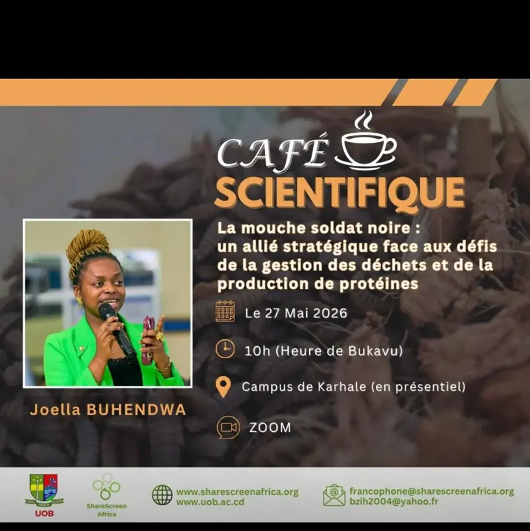
Café Scientifique : la mouche soldat noire face aux déchets
Invitée par ShareScreen Africa et l'Université Officielle de Bukavu, ASTIFERME a présenté le potentiel de la mouche soldat noire.
En savoir plus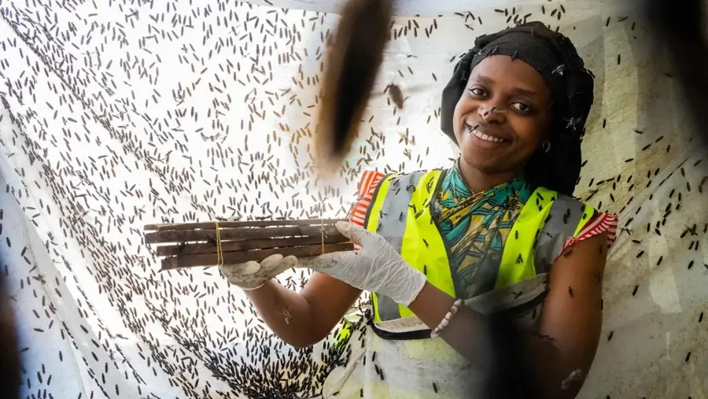
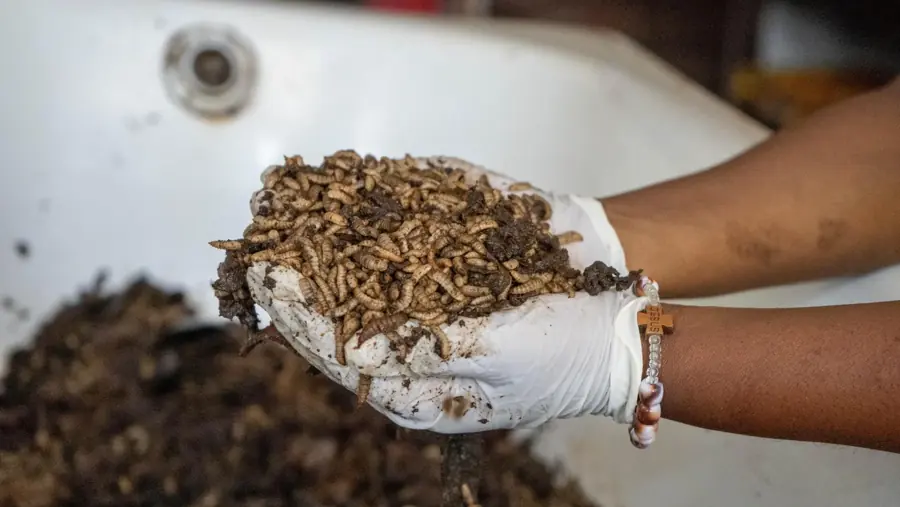
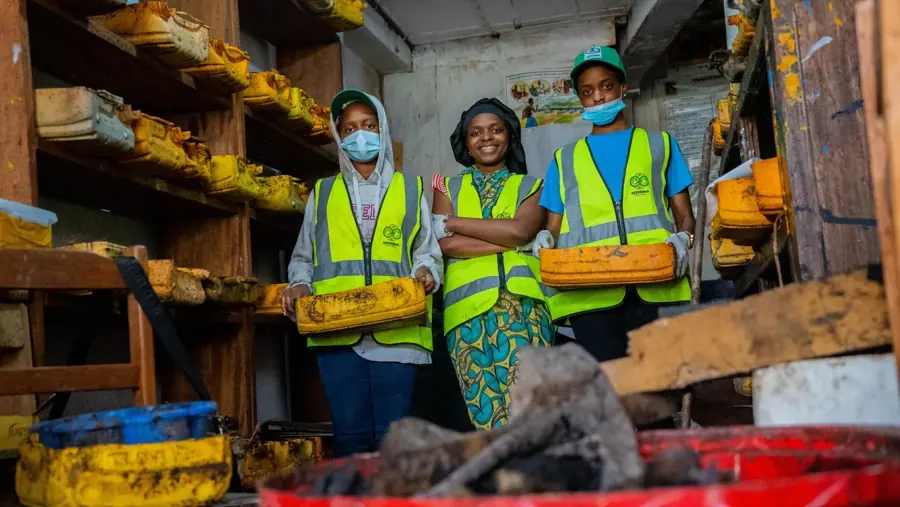
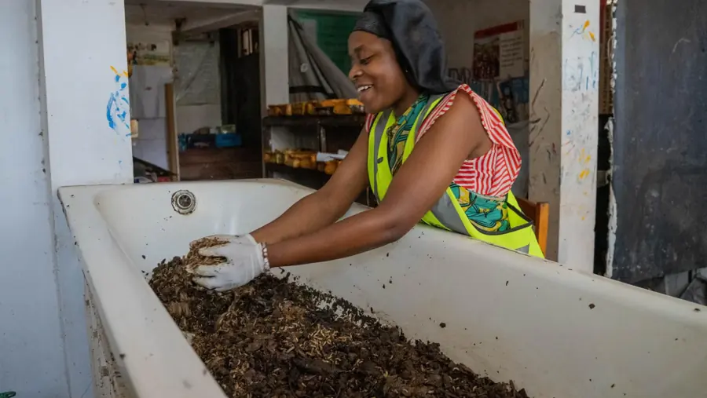
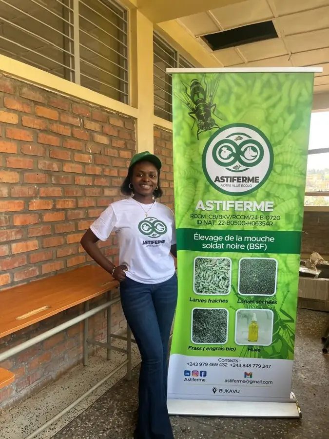
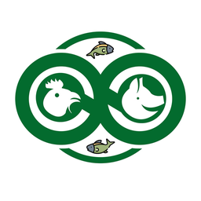
ASTIFERME transforme les déchets organiques en ressources grâce à la mouche soldat noire. Chaque mois, l'entreprise valorise 10 tonnes de déchets et produit 800 kg de larves riches en protéines, pour l'alimentation des poissons, des volailles et des porcs, ainsi que 3 tonnes de frass, un engrais organique qui régénère les sols. Dirigée par Joëlla Buhendwa, lauréate du Women in Ag Award 2025 (1ʳᵉ place, Farming). Visites de l'unité d'élevage, formations et partenariats : contactez-nous.
Protéine vivante pour poissons, volailles et porcs.
Prix sur demande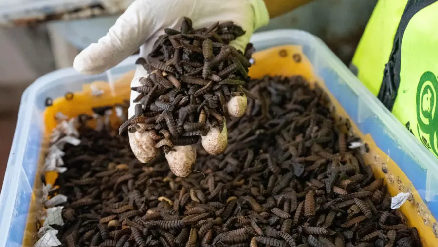
Faciles à stocker et à mélanger à la ration.
Prix sur demandeAméliore la fertilité des sols.
Prix sur demandeCes attributs sont des propositions à confirmer avec ASTIFERME.
Riches en protéines et en acides aminés essentiels. Pour les poissons, les volailles et les porcs.
Prix sur demandePratiques à stocker et à transporter, prêtes à mélanger à la ration.
Prix sur demandeRiche en éléments nutritifs : améliore la fertilité des sols et réduit les engrais chimiques.
Prix sur demandeLes prix peuvent être ajoutés plus tard dans la fiche.

Invitée par ShareScreen Africa et l'Université Officielle de Bukavu, ASTIFERME a présenté le potentiel de la mouche soldat noire.
En savoir plus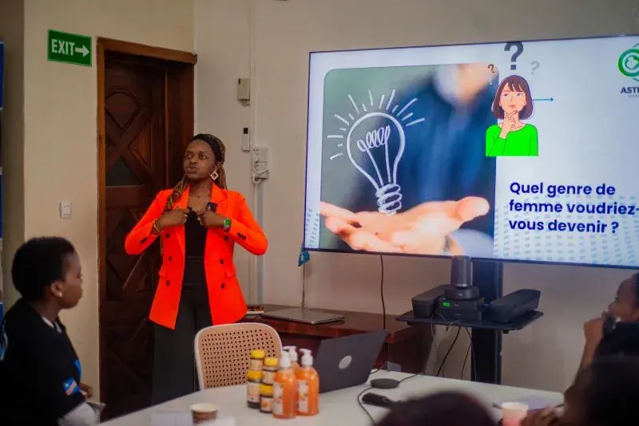
Une rencontre pour le leadership féminin, avec l'appui de l'UNICEF et du Club U-Report Filles.
En savoir plus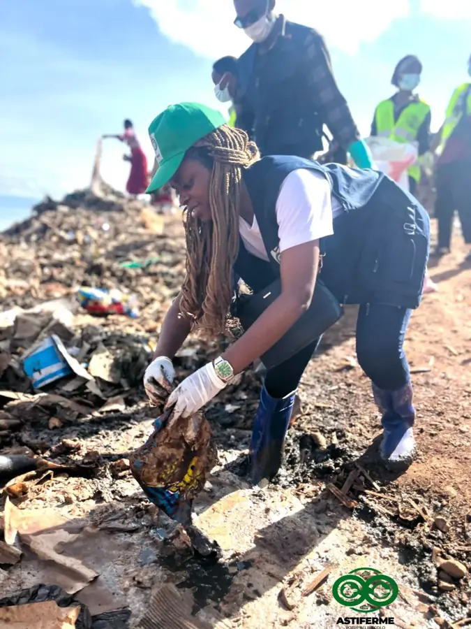
Aux côtés de plus de 70 organisations, ASTIFERME a participé à l'assainissement du bord du lac.
En savoir plus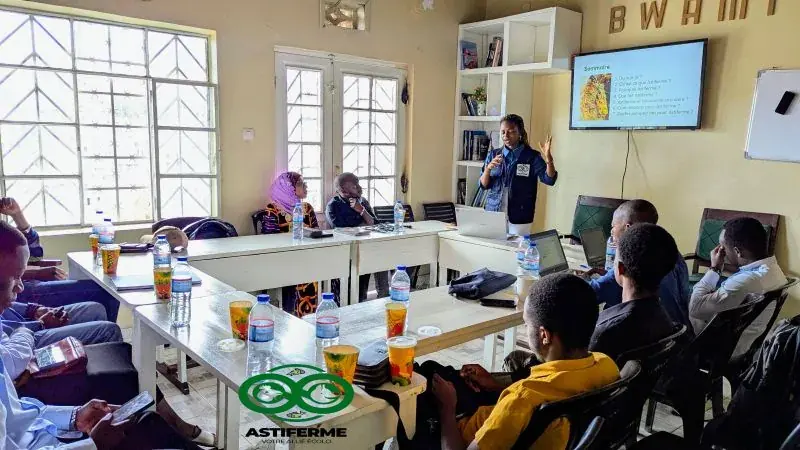
Invitée par Green Alpha au GreenTalkCafé, ASTIFERME a partagé comment les déchets peuvent devenir une source d'emplois pour les jeunes.
En savoir plusCes mises à jour reprennent les publications LinkedIn d'ASTIFERME. Une mise à jour par semaine garde la fiche vivante.
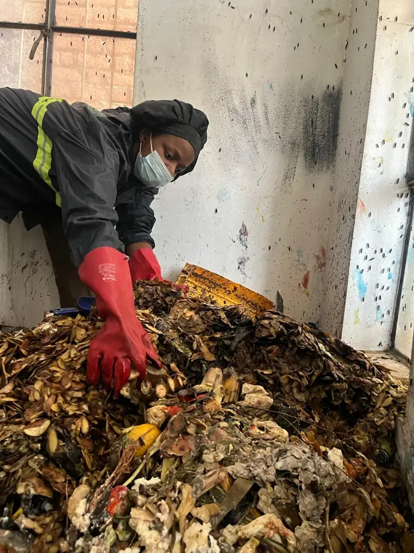
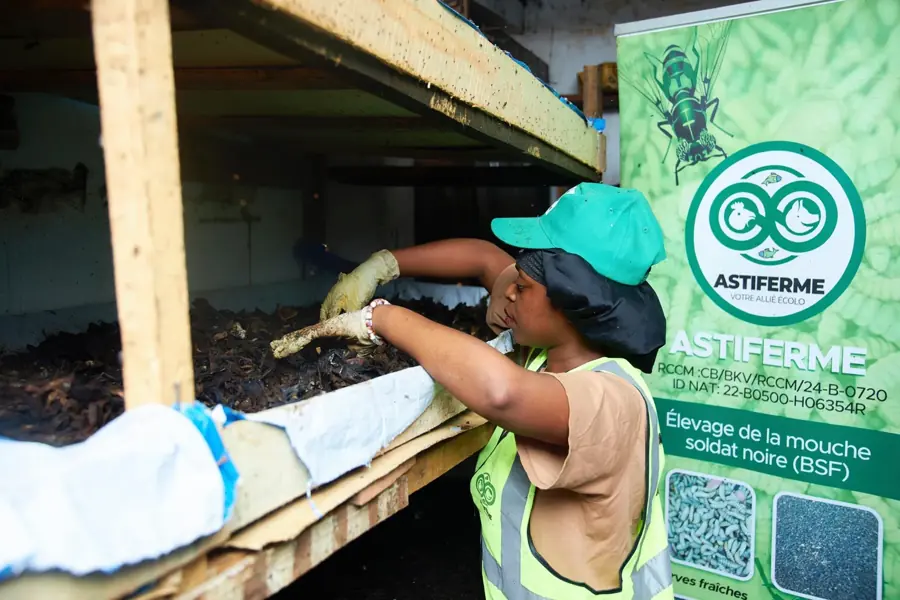
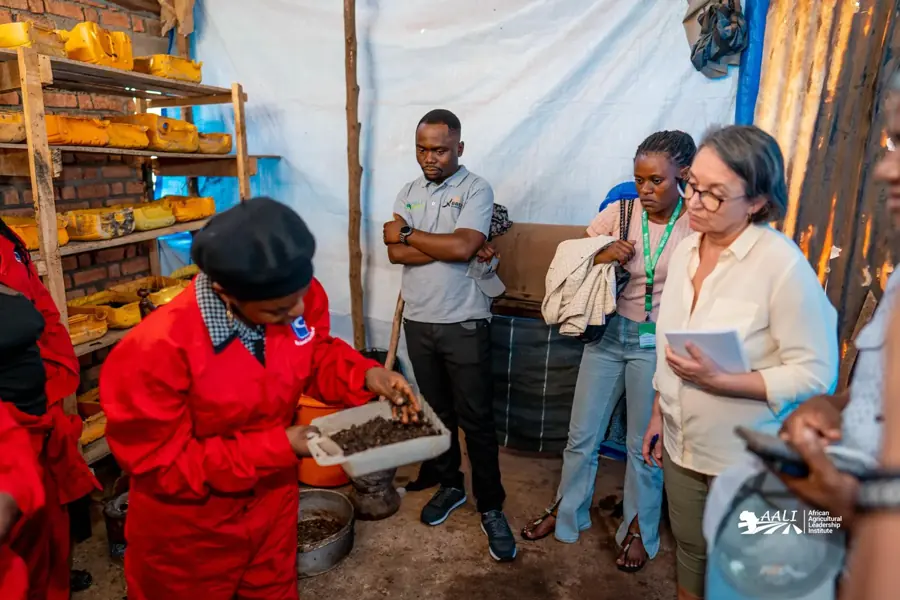
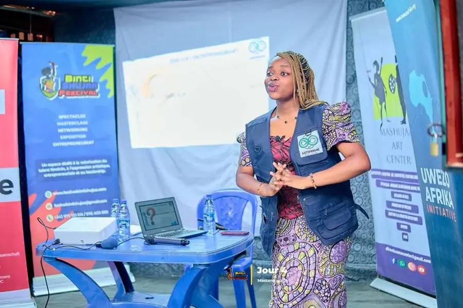
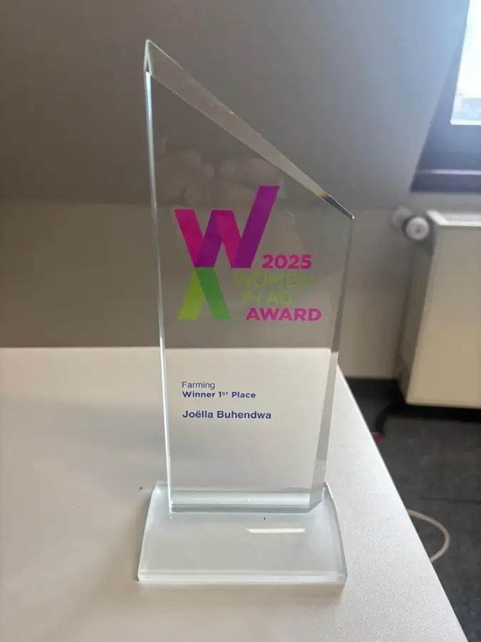
Toutes ces photos viennent d'ASTIFERME. Vérifier le droit à l'image des personnes avant publication.
Bon à savoir : n'inventez jamais d'avis et n'en achetez pas, Google les supprime. Demandez plutôt à vos partenaires, éleveurs et participants aux formations de laisser un avis honnête avec le lien de la fiche.